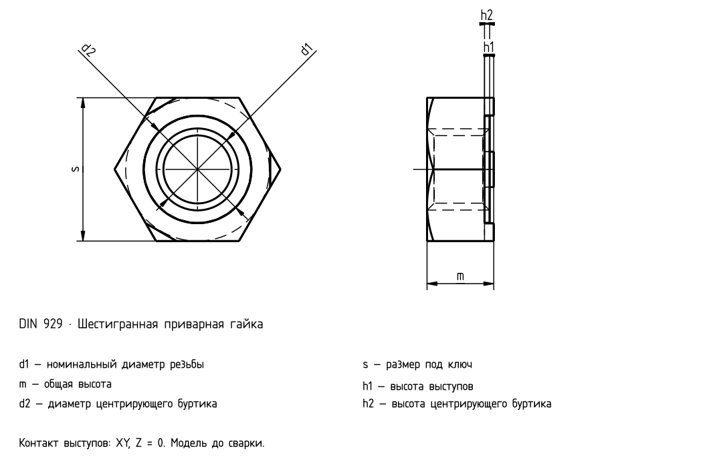

Шестигранная приварная гайка
Проверенная выборка каталогов

Шестигранная приварная гайка
| d | P | s | m | d2 | h1 | h2 |
|---|---|---|---|---|---|---|
| M3×0.5 | 0,5 | 7,5 | 3 | 4,5 | 0,55 | 0,25 |
| M4×0.7 | 0,7 | 9 | 3,5 | 6 | 0,65 | 0,35 |
| M5×0.8 | 0,8 | 10 | 4 | 7 | 0,7 | 0,4 |
| M6×1 | 1 | 11 | 5 | 8 | 0,75 | 0,4 |
| M8×1.25 | 1,25 | 14 | 6,5 | 10,5 | 0,9 | 0,5 |
| M8×1 | 1 | 14 | 6,5 | 10,5 | 0,9 | 0,5 |
| M10×1.5 | 1,5 | 17 | 8 | 12,5 | 1,15 | 0,65 |
| M10×1 | 1 | 17 | 8 | 12,5 | 1,15 | 0,65 |
| M10×1.25 | 1,25 | 17 | 8 | 12,5 | 1,15 | 0,65 |
| M12×1.75 | 1,75 | 19 | 10 | 14,8 | 1,4 | 0,8 |
| M12×1.25 | 1,25 | 19 | 10 | 14,8 | 1,4 | 0,8 |
| M12×1.5 | 1,5 | 19 | 10 | 14,8 | 1,4 | 0,8 |
| M14×2 | 2 | 22 | 11 | 16,8 | 1,8 | 1 |
| M14×1.5 | 1,5 | 22 | 11 | 16,8 | 1,8 | 1 |
| M16×2 | 2 | 24 | 13 | 18,8 | 1,8 | 1 |
| M16×1.5 | 1,5 | 24 | 13 | 18,8 | 1,8 | 1 |